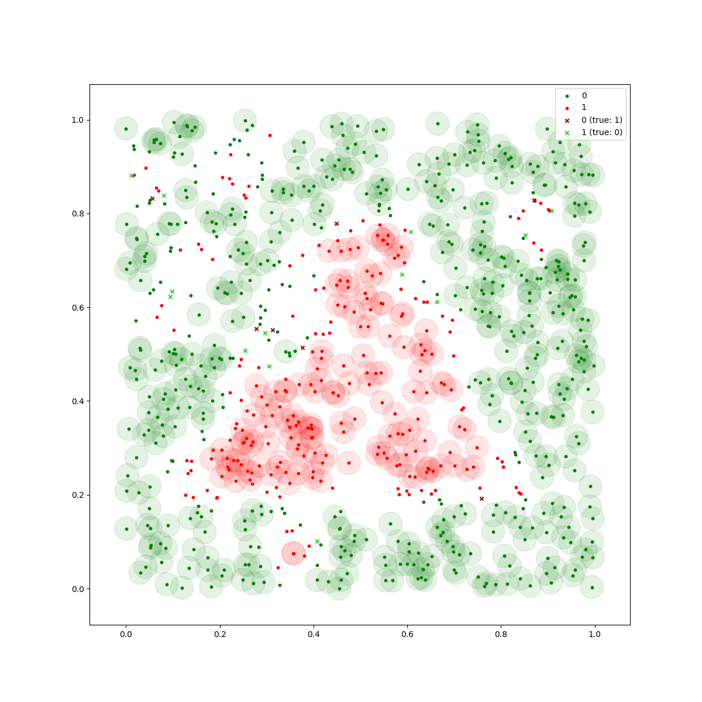
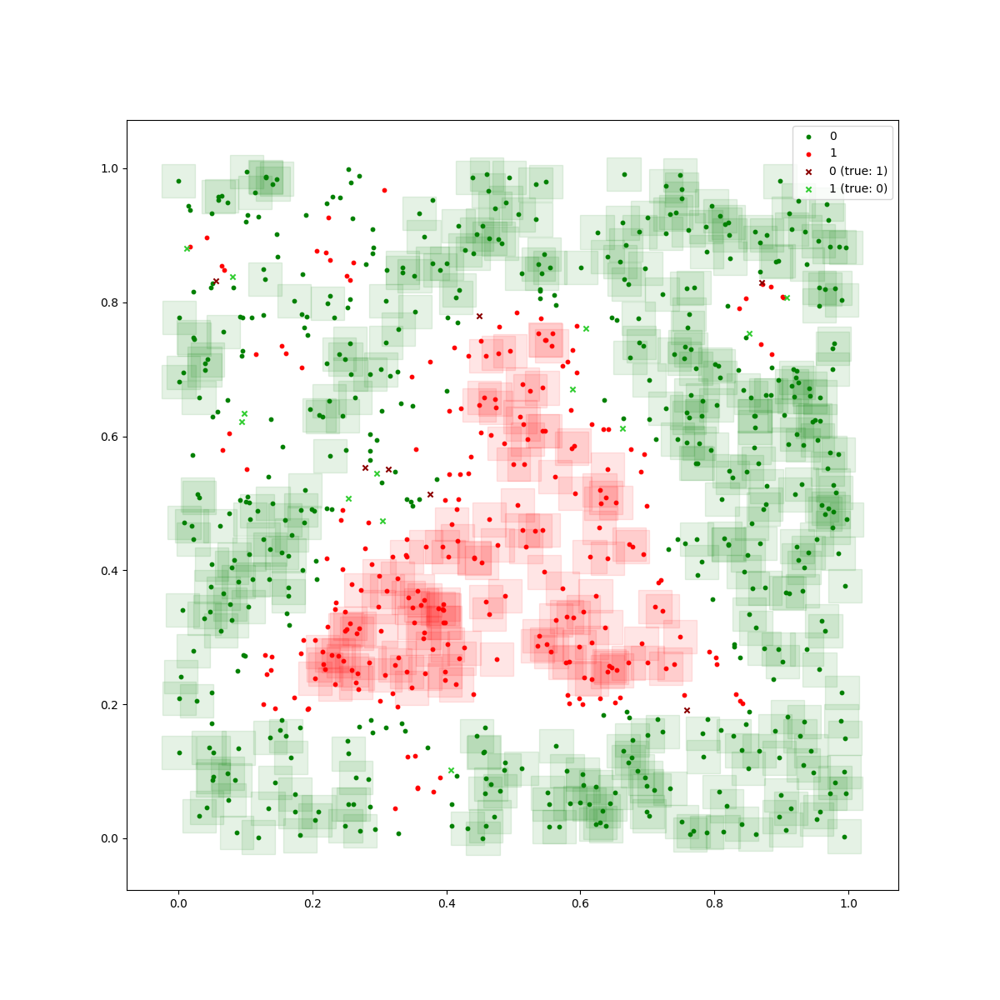

My friend Lukas and I participated in the Siemens Mobility AI Dependability Assessment, built a deep neural network classifier with safety guarantees and won a prize.
The basis of the task was a simple binary 2D classification problem, i.e., given inputs samples with two features, we need to assign them either class 0 or 1. The interesting part was that we were operating in a safety-critical setting. Therefore, our predictions should be reliable in that we should give guarantees for our misclassification rate. Also, making errors isn’t symmetrically bad. Take the example of a traffic light: If our algorithm were in charge of deciding whether to stop or go, it would be much worse if we ran over a red light than unnecessarily stopping at a green light. Hence, incorrectly classifying a green sample as red is much more costly than classifying a red one as green.
Our solution
After comparing different approaches, we settled on using a deep neural network. Yes, we brought in the big guns. Even though the data sets weren’t too complex, the goal was to design an approach that scaled to higher dimensions and, possibly, also translated to different problem domains such as vision tasks. We compared performance to some baseline approaches such as SVM – which would have allowed for much simpler safety bound computations – but didn’t achieve satisfying results. Hence, we went with a multi-layer deep neural network.
However, typically, deep neural networks are textbook examples of black-box models. To give safety guarantees, we used local perturbation analysis. Thereby we could ensure that inputs that lie within a certain epsilon environment of previously seen samples will be classified as seen in the training.
In the following illustration, the guaranteed epsilon environments appear as circles or squares, depending on whether an \(L_2\) or \(L_\infty\) norm defines the epsilon environment best. In simple terms: All inputs within green circles will be classified as green, whereas all inputs within red circles will be classified as red:


For deep neural networks, it is non-trivial to come up with these guarantees. In fact, finding an exact solution is NP-complete. For our submission, we rely on an approximation approach that has been introduced at NeurIPS 2020. It is called auto_LiRPA, and it’s a framework for automatically deriving bounds using linear relaxations. Using these bounds, we can derive the epsilon environments, define safety-related accuracy metrics and provide the required guarantees.
There were plenty more little challenges in this project, and we wrote a detailed report about it.
The code is on GitHub. All in all, this was a fun and challenging project where we learned a lot and were also awarded a runner’s up prize.
Thanks, Siemens, and thanks, Lukas, for taking this on with me!